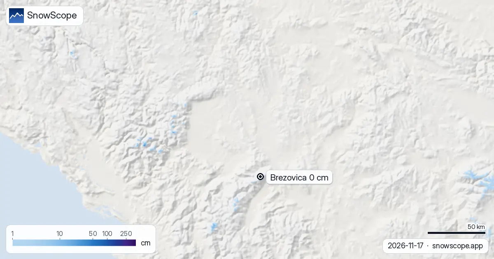
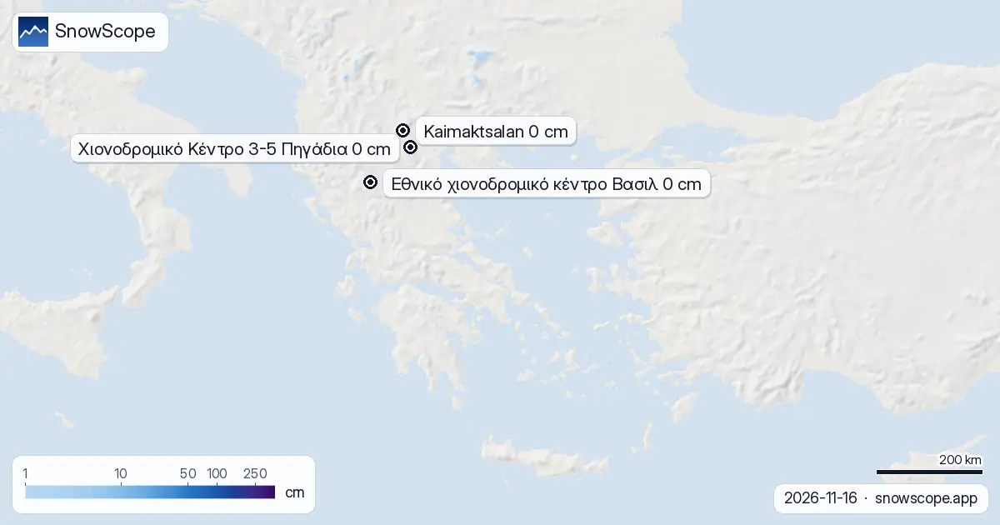
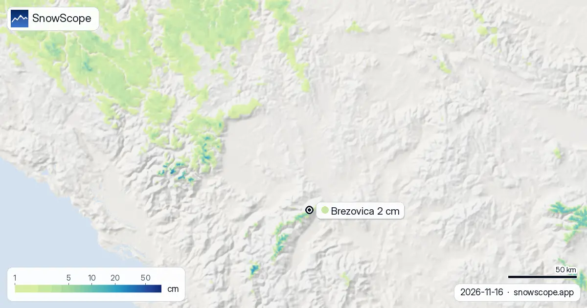
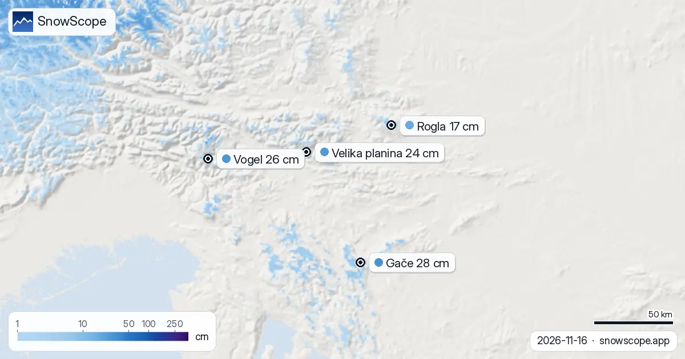
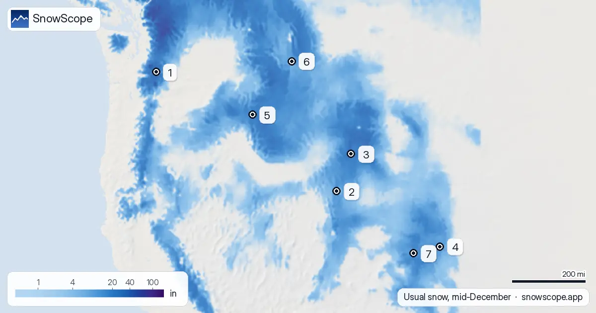
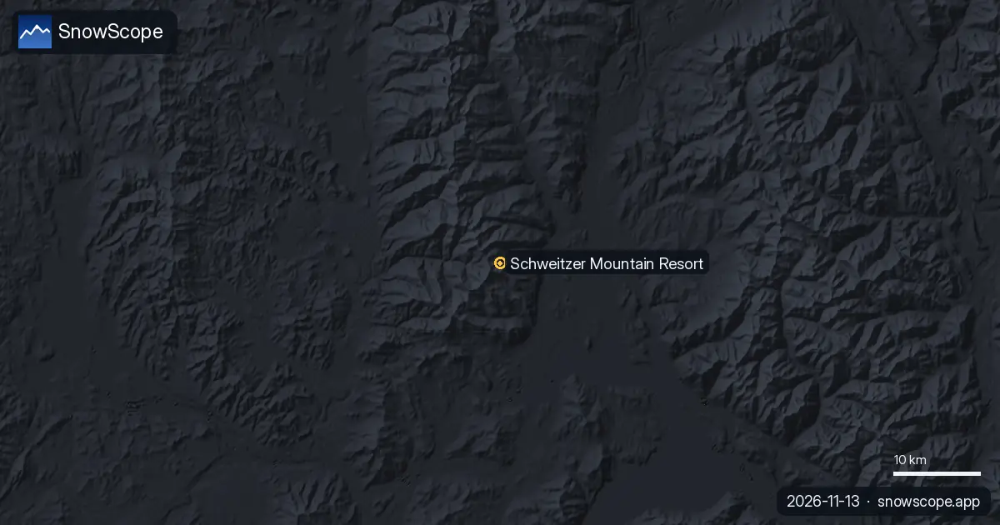
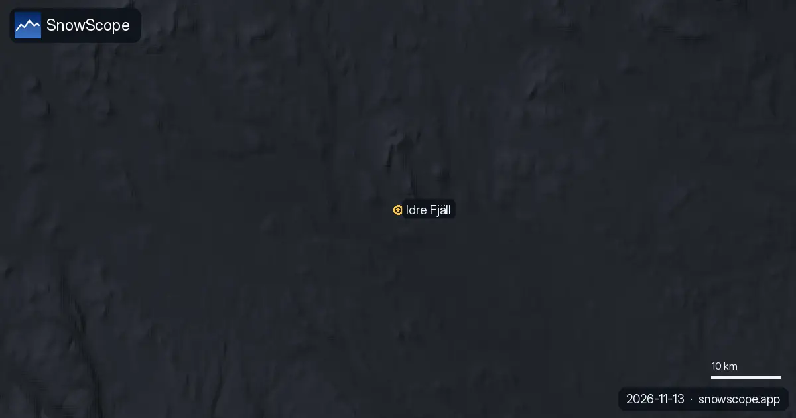
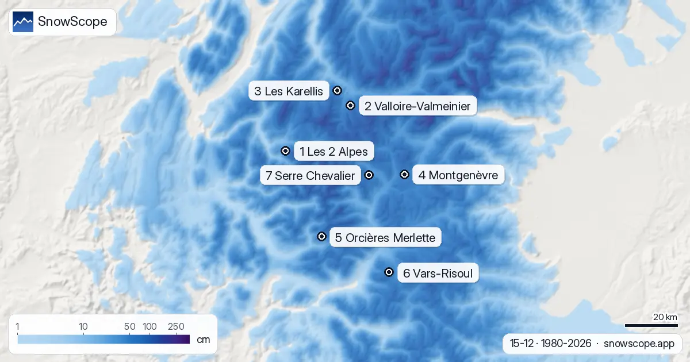

Schneeberichte
Tägliche Schneeberichte für Skifahrer: wo der Schnee liegt, was kommt und wo du fahren kannst, aus der SnowScope-Schneekarte und Messstationen. Jede Zahl stammt aus den Daten des Tages.

Schnee in Nordmazedonien am 17. November: Schneedecke, Neuschnee, Schneehöhe nach Höhe, die nächsten Tage und die besten Skigebiete.

Les Grands Montets verzeichnete in den letzten 72 Stunden 74 cm Neuschnee, wobei für die kommenden Tage weitere Schneefälle prognostiziert werden, basierend auf unserem Modell vom 17. November 2026.

Schnee in Österreich am 17. November: Schneedecke, Neuschnee, Schneehöhe nach Höhe, die nächsten Tage und die besten Skigebiete.

Schnee in Bulgarien am 17. November: Schneedecke, Neuschnee, Schneehöhe nach Höhe, die nächsten Tage und die besten Skigebiete.

Schnee in Finnland am 17. November: Schneedecke, Neuschnee, Schneehöhe nach Höhe, die nächsten Tage und die besten Skigebiete.

Schnee in Frankreich am 17. November: Schneedecke, Neuschnee, Schneehöhe nach Höhe, die nächsten Tage und die besten Skigebiete.

Schnee in Italien am 17. November: Schneedecke, Neuschnee, Schneehöhe nach Höhe, die nächsten Tage und die besten Skigebiete.

Schnee in Norwegen am 17. November: Schneedecke, Neuschnee, Schneehöhe nach Höhe, die nächsten Tage und die besten Skigebiete.

Schnee in Polen am 17. November: Schneedecke, Neuschnee, Schneehöhe nach Höhe, die nächsten Tage und die besten Skigebiete.

Schnee in Rumänien am 17. November: Schneedecke, Neuschnee, Schneehöhe nach Höhe, die nächsten Tage und die besten Skigebiete.

Schnee in der Slowakei am 17. November: Schneedecke, Neuschnee, Schneehöhe nach Höhe, die nächsten Tage und die besten Skigebiete.

Schnee in Schweden am 17. November: Schneedecke, Neuschnee, Schneehöhe nach Höhe, die nächsten Tage und die besten Skigebiete.

Schnee in der Schweiz am 17. November: Schneedecke, Neuschnee, Schneehöhe nach Höhe, die nächsten Tage und die besten Skigebiete.

Schnee in Großbritannien am 17. November: Schneedecke, Neuschnee, Schneehöhe nach Höhe, die nächsten Tage und die besten Skigebiete.

Schnee in den ukrainischen Karpaten am 17. November: Schneedecke, Neuschnee, Schneehöhe nach Höhe, die nächsten Tage und die besten Skigebiete.

Schnee in Andorra am 17. November: Schneedecke, Neuschnee, Schneehöhe nach Höhe, die nächsten Tage und die besten Skigebiete.

Schnee in Tschechien am 17. November: Schneedecke, Neuschnee, Schneehöhe nach Höhe, die nächsten Tage und die besten Skigebiete.

Schnee in Slowenien am 17. November: Schneedecke, Neuschnee, Schneehöhe nach Höhe, die nächsten Tage und die besten Skigebiete.

Schnee in Deutschland am 17. November: Schneedecke, Neuschnee, Schneehöhe nach Höhe, die nächsten Tage und die besten Skigebiete.

Schnee im Kosovo am 17. November: Schneedecke, Neuschnee, Schneehöhe nach Höhe, die nächsten Tage und die besten Skigebiete.

Das tägliche Ranking: der meiste prognostizierte Neuschnee für die nächsten 24 Stunden und bis zum 20. November, in Europa, Marokko und Nordamerika, …

Les Arcs Schneeprognose: bis zu 96 cm bis zum 19. November erwartet (Alpen). In Orelle liegt die Nullgradgrenze am 17. November zwischen 2.730 m und …

Schnee in Albanien am 16. November: Schneedecke, Neuschnee, Schneehöhe nach Höhe, die nächsten Tage und die besten Skigebiete.

Schnee in Andorra am 16. November: Schneedecke, Neuschnee, Schneehöhe nach Höhe, die nächsten Tage und die besten Skigebiete.

Schnee in Österreich am 16. November: Schneedecke, Neuschnee, Schneehöhe nach Höhe, die nächsten Tage und die besten Skigebiete.

Schnee in Bosnien und Herzegowina am 16. November: Schneedecke, Neuschnee, Schneehöhe nach Höhe, die nächsten Tage und die besten Skigebiete.

Schnee in Bulgarien am 16. November: Schneedecke, Neuschnee, Schneehöhe nach Höhe, die nächsten Tage und die besten Skigebiete.

Schnee in Kroatien am 16. November: Schneedecke, Neuschnee, Schneehöhe nach Höhe, die nächsten Tage und die besten Skigebiete.

Schnee in Tschechien am 16. November: Schneedecke, Neuschnee, Schneehöhe nach Höhe, die nächsten Tage und die besten Skigebiete.

Schnee in Finnland am 16. November: Schneedecke, Neuschnee, Schneehöhe nach Höhe, die nächsten Tage und die besten Skigebiete.

Schnee in Frankreich am 16. November: Schneedecke, Neuschnee, Schneehöhe nach Höhe, die nächsten Tage und die besten Skigebiete.

Schnee in Deutschland am 16. November: Schneedecke, Neuschnee, Schneehöhe nach Höhe, die nächsten Tage und die besten Skigebiete.

Schnee in Griechenland am 16. November: Schneedecke, Neuschnee, Schneehöhe nach Höhe, die nächsten Tage und die besten Skigebiete.

Schnee in Ungarn am 16. November: Schneedecke, Neuschnee, Schneehöhe nach Höhe, die nächsten Tage und die besten Skigebiete.

Schnee in Irland am 16. November: Schneedecke, Neuschnee, Schneehöhe nach Höhe, die nächsten Tage und die besten Skigebiete.

Schnee in Italien am 16. November: Schneedecke, Neuschnee, Schneehöhe nach Höhe, die nächsten Tage und die besten Skigebiete.

Schnee im Kosovo am 16. November: Schneedecke, Neuschnee, Schneehöhe nach Höhe, die nächsten Tage und die besten Skigebiete.

Schnee in Montenegro am 16. November: Schneedecke, Neuschnee, Schneehöhe nach Höhe, die nächsten Tage und die besten Skigebiete.

Schnee in Nordmazedonien am 16. November: Schneedecke, Neuschnee, Schneehöhe nach Höhe, die nächsten Tage und die besten Skigebiete.

Schnee in Norwegen am 16. November: Schneedecke, Neuschnee, Schneehöhe nach Höhe, die nächsten Tage und die besten Skigebiete.

Schnee in Polen am 16. November: Schneedecke, Neuschnee, Schneehöhe nach Höhe, die nächsten Tage und die besten Skigebiete.

Schnee in Portugal am 16. November: Schneedecke, Neuschnee, Schneehöhe nach Höhe, die nächsten Tage und die besten Skigebiete.

Schnee in Rumänien am 16. November: Schneedecke, Neuschnee, Schneehöhe nach Höhe, die nächsten Tage und die besten Skigebiete.

Schnee in Serbien am 16. November: Schneedecke, Neuschnee, Schneehöhe nach Höhe, die nächsten Tage und die besten Skigebiete.

Schnee in der Slowakei am 16. November: Schneedecke, Neuschnee, Schneehöhe nach Höhe, die nächsten Tage und die besten Skigebiete.

Schnee in Slowenien am 16. November: Schneedecke, Neuschnee, Schneehöhe nach Höhe, die nächsten Tage und die besten Skigebiete.

Schnee in Spanien am 16. November: Schneedecke, Neuschnee, Schneehöhe nach Höhe, die nächsten Tage und die besten Skigebiete.

Schnee in Schweden am 16. November: Schneedecke, Neuschnee, Schneehöhe nach Höhe, die nächsten Tage und die besten Skigebiete.

Schnee in der Schweiz am 16. November: Schneedecke, Neuschnee, Schneehöhe nach Höhe, die nächsten Tage und die besten Skigebiete.

Schnee in Großbritannien am 16. November: Schneedecke, Neuschnee, Schneehöhe nach Höhe, die nächsten Tage und die besten Skigebiete.

Schnee in den ukrainischen Karpaten am 16. November: Schneedecke, Neuschnee, Schneehöhe nach Höhe, die nächsten Tage und die besten Skigebiete.

Wie viel Schnee gewinnen die Berge? Unsere Tabelle zeigt die Skigebiete mit dem meisten prognostizierten Neuschnee für die nächsten 24 Stunden und …

Liegt mehr Schnee als vor einem Jahr? Wir haben heute mit dem 15. November des letzten Winters in 4 Skigebieten in Westkanada verglichen: 2 davon …

Heute liegt der meiste Schnee in den Alpen in La Grave (Frankreich), etwa 97 cm in den oberen Hängen. Danach kommt Orelle mit 81 cm, und Les Deux …

Liegt heute Schnee im Atlas? Auf den Skipisten im Atlas liegt heute kein Schnee. Schnee ist nur auf den höchsten Gipfeln gespeichert: etwa 20 km² …

Der Schnee hat sich seit dem 13. November zurückgezogen, von 6.880 sq mi (17.820 km²) auf heute 6.039 sq mi (15.640 km²); für den 18. November ergibt …

2 von 4: So viele Skigebiete im Nordosten der USA liegen heute deutlich über dem Normalwert. Wie sieht dieser Winter bisher aus? Wir haben den …

Schneefläche: 258.160 km² am 13. November, heute 253.880 km², 298.900 km² erwartet für den 18. November. Die Karte wird weniger weiß. Drei Zutaten, …

Schneebericht in den Pyrenäen, 15. November. Regen und Schnee gemischt: Schnee nur in der Höhe, etwa 7–19 cm im Gipfelbereich von Cauterets Cirque du …

Big White Schneedecke: 99 cm Auflage in den oberen Hängen (15. November). Am meisten Schnee in Westkanada liegt in Mount Washington Alpine Resort: …

Les Grands Montets: Wie viel Schnee kommt? 73–79 cm bis zum 18. November. Wie viel Schnee kommt in den Alpen, und wo? Regen und Schnee gemischt: …

In Andermatt (2963 m) zeigt die Prognose 75 mm Niederschlag vom 15. November bis 20. November. In den nassen Stunden liegt die Nullgradgrenze bei etwa

Lies den Schnee in den Pyrenäen heute, und du bekommst frischer Pulverschnee, dünner Schnee zum Saisonstart und milde Luft, die einen Harschdeckel …

Wir haben den Schnee am Boden, den Neuschnee der letzten 72 Stunden und das, was die Prognose dazugibt, abgewogen und Tuckerman Ravine und Black …

Les Deux Alpes: Wie viel Neuschnee fiel? 38 cm in 72 Stunden (15. November). Wo fiel in den Alpen der meiste Neuschnee? La Grave bekam in den letzten …

Manning Park Resort: 11 cm Neuschnee in 72 Stunden (Westkanada, 15. November). Whistler Blackcomb bekam in den letzten 72 Stunden 82 cm Neuschnee, …

Unsere Prognose für den 15. November 2026 zeigt, dass Courmayeur in Italien mit 88 cm Neuschnee bis Mittwoch europaweit führend ist.

Beaver Mountain verlangt für die Saison 2026-27 einen einheitlichen Erwachsenenpreis von 75 $ pro Tag. Unsere Schneehistorie zeigt: Anfang Dezember ist dort Glückssache; die Woche vor Weihnachten ist deutlich sicherer.

Bridger Bowls Erwachsenenticket 2026/27 kostet 86 $ online, 99 $ am Schalter. Unsere Historie sagt: Mitte Dezember ist auf der Bergmitte Glückssache; Ende Dezember ist sicherer.

Indy Base Pass 419 $, Indy+ 469 $, zwei Tage in jedem Partnergebiet. Wir haben ihn den geprüften Dezember-Tagespreisen von sieben Indy-Gebieten gegenübergestellt, samt ihrer Schneechancen.

Erwachsenentickets bei Lookout Pass kosten 2026-2027 unter der Woche mit Reservierung 63 $, am Wochenende 75 $. Die Bergmitte hatte bis zum 15. Dezember in 85 % der vergangenen Winter 20 in (50 cm).

Montana Snowbowls Erwachsenentickets 2026/27 kosten 78 $ unter der Woche und 85 $ am Wochenende. Die Bergmitte hatte bis zum 15. Dezember in 83 % unserer vergangenen Winter 20 in (50 cm).

Ski Cooper hält den Erwachsenenpreis an Wochentagen für 2026-27 bei 49 $ (99 $ am Wochenende). Die Bergmitte hat am 15. Dezember meist 26 in (66 cm) Schnee, 70 % der Winter über 20 in.

Sunlight-Tickets starten bei 74 $, und der Sunny 6 Pack kostet 349 $, wenn er bis zum 30. November 2026 gekauft wird. Die Bergmitte hatte bis zum 15. Dezember in 72 % der Winter 20 in (50 cm).

Ein Timberline-Tagesticket kostet 129 $ außerhalb der Spitzenzeiten und 161 $ zur Spitzenzeit; das Nachmittagsticket liegt bei 96 $ außerhalb der Spitzenzeiten. Auf der Mittelstation liegen bis zum 15. Dezember meist 52 in (132 cm) Schnee.

Von Ski Cooper (49 $ unter der Woche, 99 $ am Wochenende) bis Mt. Baker (98,80 $ gegen 115,42 $): geprüfte Dezember-Preisunterschiede an sieben US-West-Skigebieten, mit ihren Schneechancen.

Schweitzers 3-Pack für 2026/2027 kostet 249 $, laut eigener Rechnung des Resorts 83 $ pro Tag. Oben hält sich bis zum 15. Dezember meist 54 in (138 cm) Schnee.

Krvavec im Dezember: Tageskarte 47 EUR, 6 Tage 205 EUR, aber nur 13 cm an der Mittelstation an einem typischen 15. Dezember, und 11 von 46 Wintern ohne Schnee.

Skifahre auf 157 km markierten Pisten in Serre Chevalier, wo die Bergspitze bis Mitte Dezember eine 100 %ige Schneewahrscheinlichkeit hat.

Turracher Höhe im Dezember: 23 cm an der Mittelstation an einem typischen 15. Dezember, 39 % der Winter mit 30 cm vor Weihnachten; 6 Tage Nebensaison 353 EUR.

Hochkar im Dezember: Tageskarten an Dezemberterminen ab 32,90 bis 47,90 EUR; 38 cm an der Mittelstation an einem typischen 15. Dezember, seit den 1980ern weniger.

Idre Fjäll im Dezember: 32 cm an der Mittelstation an einem typischen 15. Dezember; 65 % der Winter mit 30 cm Mitte Dezember, 76 % in der Weihnachtswoche. Ehrliche Chancen.

Brighton ab 72 $ gegen Ski Cooper mit 49 $ unter der Woche und Wolf Creek mit 96 $: Budget-Skigebiete in Utah und Colorado im Vergleich über 46 Winter Dezember-Schnee.

Zehn europäische Skigebiete im Ranking für den Dezember, angeführt von Les 2 Alpes mit 75 cm Schnee auf mittlerer Höhe.

Brundage-Tagestickets starten an ausgewählten Tagen bei nur 65 $; die Bergmitte hatte am 15. Dezember in 87 % unserer vergangenen Winter 20 in (50 cm) Schnee. Feiertagsdaten, die man meiden sollte.

Boí Taüll startet auf 2039 m und schlägt Baqueira Beret beim Preis für den Tagesskipass, obwohl der Schnee Anfang Dezember Geduld erfordert.

Sälen im Dezember: 28 cm an einem typischen 15. Dezember und 48 % der Winter mit 30 cm Mitte Dezember, weniger als in den 1980ern; Trysil nebenan schneidet besser ab.

Die Tageskarte für Erwachsene bei Snow King startet bei 100 $. Laut unserer Schneehistorie lag auf halber Höhe bis zum 15. Dezember in 87 % der Winter eine Schneedecke von 20 in (50 cm): eine günstige Art, das Jackson-Tal zu beskifahren.

Orcières Merlette bietet eine hohe Basis auf 1.826 m und einen 6-Tage-Pass ab 227 EUR, was es zu einer zuverlässigen Wahl für einen Skiurlaub im Dezember macht.

Lohnt sich Alpe d'Huez für Dezember 2026? Wir prüfen die Schneechancen, den Startpreis von 58,00 EUR und vergleichen es mit Les 2 Alpes.

Sloweniens Skipässe sind die günstigsten (Krvavec 205 EUR für 6 Tage), doch Naturschnee im Dezember ist dort selten; Lachtal, Hochkar und Mölltaler Gletscher schneiden besser ab.

Loveland verkauft Online-Tickets für 60 $ bis zum 13. Dezember 2026, danach 159 $ am Schalter. Reicht der Schnee Anfang Dezember aus? Unsere 46 vergangenen Winter antworten Woche für Woche.

Cauterets bietet 25 km Pisten für 46 EUR, aber unsere Schnee-Historie zeigt, dass die besten Chancen auf eine Schneedecke in der letzten Dezemberwoche liegen.

Skifahren im Lachtal im Dezember: Tageskarte 62 EUR, Kinder bis 6 gratis, 46 cm an der Mittelstation an einem typischen 15. Dezember – aber klar fallender Trend.

Online-Tickets für White Pass kosten ab 69 $ außerhalb der Stoßzeiten und 89 $ an Spitzentagen, und auf halber Berghöhe lagen am 15. Dezember in 87 % der vergangenen Winter 20 in (50 cm) Schnee.

Fahre diesen Dezember auf den 131 km Pisten der Forêt Blanche mit einem 6-Tage-Pass für 298 EUR.

Ruka im Dezember: 6-Tage-Skipass 265 EUR, Tageskarte 58 EUR; 36 cm an einem typischen 15. Dezember, aber nur 39 % der Winter mit 30 cm in der ersten Woche.

Bei Monterosa Ski kostet der Tagespass online 40,00 bis 71,00 EUR. Im Dezember liegt der Schnee oben: üblich 124 cm auf 3.030 m, 6 cm auf 1.207 m.

Bei Wolf Creek kostet das Erwachsenenticket für die Saison 2026-2027 an normalen Tagen 96 $ und an Spitzentagen 110 $; auf halber Höhe lagen an einem typischen 15. Dezember 34 in (87 cm) Schnee.

Fellhorn/Kanzelwand im Dezember: 63 cm am Gipfel (1965 m) an einem typischen 15. Dezember, 10 cm im Tal; 6-Tage-Skipass im Advent 344,50 EUR bis 20. Dezember.

Plane deinen Dezember-Trip 2026 nach Les Orres, indem du die wöchentlichen Skipasspreise mit unserer Schneehistorie aus 46 vergangenen Wintern vergleichst.

Hemavan im Dezember: 82 cm an der Mittelstation an einem typischen 15. Dezember, jeder Winter mit 30 cm Mitte Dezember; der tiefste Dezember unserer Nordic-Auswahl.

Tageskarten in Brighton starten für 2026/27 bei 72 $, wenn man früh kauft. Auf halber Höhe liegen am 15. Dezember meist 37 in (94 cm) Schnee, gegenüber 25 in (64 cm) in Park City.

Vergleiche Grandvalira und spanische Skigebiete im Dezember 2026 bezüglich Schneehöhen, Lift-Höhen und Preisen ab 49,00 EUR.

Pitztaler Gletscher im Dezember: 87 cm an der Mittelstation an einem typischen 15. Dezember, mehr Dezemberschnee als in den 1980ern; Tageskarte 77 EUR, 6 Tage 410 EUR.

16 preisgünstige US-Skigebiete, eingestuft nach den Dezember-Schneechancen aus 46 vergangenen Wintern, mit den geprüften Tagespreisen: von 49 $ unter der Woche bis 125 $ und mehr.

Für eine günstige Skiwoche mit der Familie im Dezember in Astún-Candanchú solltest du Ende Dezember anpeilen, wenn die oberen Pisten in 67 % der vergangenen Winter guten Schnee haben.

Deutschland im Dezember: Zugspitze und Fellhorn-Gipfel hatten Mitte Dezember in mindestens 9 von 10 Wintern 30 cm; Sudelfeld, Brauneck und Feldberg nur selten.

Puy-Saint-Vincent bietet einen 44 EUR Erwachsenen-Tagespass und soliden Dezember-Schnee in der Höhe, hier im Vergleich zum großen Nachbarn Serre Chevalier.

In all unseren 46 vergangenen Wintern lagen an Grand Targhees Mittelstation am 15. Dezember mindestens 20 in (50 cm) Schnee. Das Online-Tagesticket kostet je nach Datum 125 $ bis 180 $.

Oppdal im Dezember: 60 cm an der Talstation (585 m) an einem typischen 15. Dezember, 93 % der Winter mit 30 cm Mitte Dezember – besser als Trysils Tal.

Grimentz-Zinal bietet 71 km Pisten und verlässlichen Schneesicherheit in großer Höhe für Ihre Dezember-Reise, mit 6-Tages-Pässen für CHF 339,00.

Österreich vor Weihnachten: Galtür 258 EUR und Kühtai 269 EUR für 6 Tage, mit 30 cm in über 90 % der Winter; Gletscher kosten mehr, kleine Hügel sind ein Risiko.

Planst du eine Reise nach Baqueira Beret im Dezember? Sieh dir unsere Schnee-Historie an, Ticketpreise ab 70,00 € für einen Tag und den Vergleich zu Astún-Candanchú.

Wir bewerten französische Skigebiete nach der Schneewahrscheinlichkeit im Dezember und den Skipasspreisen, beginnend bei 36,00 EUR für einen Tagespass für Erwachsene in Les Karellis.

In Oukaïmeden gibt der Dezember 18 cm auf Mittelstationshöhe in einem typischen Monat, gegen 44 cm im Februar und 53 cm im März. Was 46 Winter über den richtigen Skimonat sagen.


Galtür im Dezember: 55 cm an der Mittelstation an einem typischen 15. Dezember, 93 % der Winter mit 30 cm Mitte Dezember; Tageskarte Nebensaison 55,50 EUR bis 18. Dezember.

Geilo im Dezember: 57 cm an der Mittelstation an einem typischen 15. Dezember, 96 % der Winter mit 30 cm Mitte Dezember; Tageskarte ab 590 NOK (rund 56 EUR).

Grandvalira wird oft als günstiges Skigebiet für Dezember verkauft, doch der Naturschnee an der Talstation liegt in den vergangenen Wintern im Schnitt bei nur 9 cm.